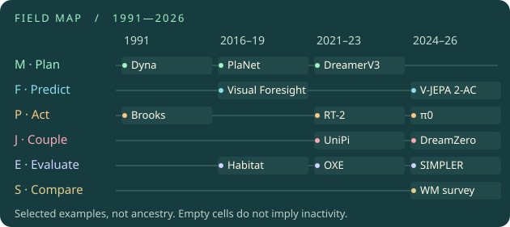

DreamTrue
Use counterfactual actions and learned interaction feedback to improve action following, not just visual fidelity. Predicted success still needs real-world calibration.
arXivA model can generate a cup sliding into place and still miss the cup. Start at the point of contact to separate prediction, planning and action.
Explore the timeline → Start with the cup
From reactive control to imagined plans to joint futures and actions. Full swimlanes →Three views of the same records. Release years with entries are evenly spaced, not proportional to elapsed time. Branches indicate reading families, not proven descent.
Open a family and follow the data through its components. Each plate shows one representative path; E and S are evaluation and survey workflows, not controllers.
This path shows online planning. Dreamer takes the other branch: train an actor on imagined trajectories, then use the actor at deployment.
Deep dive: PlaNet → · Paper ↗This is an action-conditioned feature predictor. Pixel models change the output; grasp-outcome prediction needs only an event probability. A latent action need not be a motor command.
Deep dive: V-JEPA 2 / 2-AC → · Paper ↗The diagram follows a chunk policy: the denoising target is action, not imagery. RT-2 instead decodes tokens, while SayCan selects an available skill.
Deep dive: Diffusion Policy → · Paper ↗Joint output need not mean generating a video first and retrieving actions later. GE-Act 2.0 is a contrasting design with an explicit visual-plan → inverse-dynamics interface.
Deep dive: DreamZero → · Paper ↗This is an evaluation pipeline, not a neural network. A dataset supplies trajectories, a simulator supplies interaction, and real trials calibrate a proxy. These roles are not interchangeable.
Deep dive: SIMPLER → · Paper ↗This is a survey-reading workflow, not an executable model. Reclassify one system by function, time and space rather than treating an architecture label as a capability score.
Deep dive: A Comprehensive Survey on World Models for Embodied AI → · Paper ↗Endpoint / distance to goal: 7 / 1
Toy example: goal = 8. The model is not the cup; observe again after acting.Top lane: direct policy. Choose a push from the observation and goal. No explicit comparison of future states is required.
Bottom lane: model-predictive control. The goal is 8. Of the predicted endpoints for wait, gentle push and hard push (3, 7, 11), 7 is closest. Execute the gentle push. The cup only reaches 4: replan from 4, not 7.
Illustrative values, not experimental results.Periods overlap; a new route does not invalidate an older one.
38 records · 25 code links¹ · 6 model cards
No matches. Clear the query or try another family.
Use counterfactual actions and learned interaction feedback to improve action following, not just visual fidelity. Predicted success still needs real-world calibration.
arXivUse a video-diffusion backbone to jointly predict visual futures and actions. Distinguish task progress from complete success and compare the correct embodiment checkpoint.
arXivCompress control-relevant information, predict a visual future in one step and infer actions with inverse dynamics. More than one action can reach a similar image.
arXivLearn scene-structure representations for world-action modeling. Check benchmark-specific post-training before interpreting cross-platform results as zero-shot.
arXivTrain first on the world, then jointly predict RGB, metric depth and actions from RGB-D demonstrations. Depth can distinguish apparent proximity from reachability, but requires suitable sensor data.
arXivPackage generative video priors for downstream adaptation. Conditioning on prompts or video alone does not establish sensitivity to precise robot actions.
arXivCombine heterogeneous data, high-level subtasks and low-level actions for instructions in unseen homes. An unseen home is not an arbitrary unseen embodiment.
arXivA compact VLA and asynchronous execution lower the barrier to experiments. Measure latency across camera, inference and control, not just the forward pass.
arXivCompare functionality, temporal modeling and spatial representation. Cross this with the atlas's decision-role grouping rather than treating a representation as a use case.
arXivFirst predict video features; freeze the encoder and train an action-conditioned predictor on robot interactions for goal-image planning. The linked Hub card is the video encoder, not the controller.
arXivGenerate action-conditioned pixels with diffusion and train an Atari policy in the resulting environment. Small details affect score; game dynamics are not physical contact.
NeurIPS 2024 · preprintCollect real trajectories across sites using standardized hardware to diversify scenes and operators. Many sites do not mean many robot types.
RSS 2024 · preprintInfer discrete latent actions from videos without action labels, then condition an interactive generator on them. A playable button is not a calibrated robot command.
ICML 2024 · preprintPretrain a generalist policy on cross-robot trajectories and adapt input/output interfaces. New embodiments can still require fine-tuning.
RSS 2024 · preprintFuse visual features and generate discrete robot actions with a language model. Check the embodiment-specific unnormalization statistics before interpreting its outputs.
CoRL 2024 · PMLR 2025Attach a flow-matching action expert to a vision-language backbone to generate continuous action chunks. Instructions still need a concrete coordinate frame.
arXivCalibrate simulated policy evaluation with paired real trials. Correlated rankings on one setup do not establish correlation after changing grippers.
arXivUse the component, control and planning taxonomy to orient a VLA reading list. A survey is not an independent robot trial.
arXivLearn joint-action chunks from low-cost bimanual demonstrations and ensemble overlapping predictions over time. Results depend on demonstrations and the control interface.
RSS 2023 · preprintDenoise action sequences rather than images of the future. Multiple routes around an object can coexist; execute a prefix before observing again.
RSS 2023Normalization and other stabilizers make latent imagination work across diverse control domains. That breadth is not a household-robot trial.
Nature 2025Group manipulation tasks by spatial, object and goal variation to study lifelong transfer. Report the suite and task order, not just a pooled average.
NeurIPS 2023 · preprintPool datasets across robots to study transfer from shared training. A common storage format does not align coordinates, control rates or gripper semantics.
ICRA 2024 · preprintEncode actions as text tokens and co-fine-tune on robot demonstrations and vision-language tasks. Semantic transfer is not proof of precise physical prediction.
CoRL 2023 · PMLRPlan short trajectories in a task-oriented latent space and use terminal value to estimate what lies beyond. Pixel reconstruction is not required.
ICLR 2024 · preprintEncode images and instructions to predict discretized actions. Task breadth does not confer a control interface for arbitrary new hardware.
RSS 2023 · preprintCombine language-based usefulness with a learned feasibility score, then execute an existing skill. The planner cannot summon actions absent from its skill library.
CoRL · preprintTrain locomotion policies in many parallel simulated environments, then transfer to hardware. This is embodied learning without requiring next-frame prediction.
CoRL · preprintTrain an actor and value function on imagined latent trajectories. This shifts work to training rather than searching over futures at every decision.
ICLR 2020 · preprintConfigurable sensors, tasks and a 3D simulator enable closed-loop navigation experiments. The simulator supplies the environment; the agent did not learn it.
ICCV 2019 · CVFLearn reward, value and policy priors for tree search rather than reconstructing the board or screen. Accuracy is tied to the decision task.
Nature 2020Learn a recurrent latent state from pixels, compare candidate action sequences in that state, execute the first step and replan. Search costs time at each decision.
ICML 2019 · PMLRA visual encoder compresses frames; a recurrent model predicts latent dynamics; a small controller acts. A shortcut found inside the dream need not exist in the environment.
NeurIPS 2018 · preprintPair natural-language routes with indoor viewpoint graphs and ask whether an agent reaches the goal. Traversable graph edges are not mobile-base dynamics.
CVPR 2018 · preprintCompare vision, touch and their combination for predicting grasp outcomes. This event predictor illustrates a narrower target than a video; it is not a general simulator.
CoRL 2017 · PMLRCondition a video predictor on candidate motor commands, use predicted pixel motion to select a push and replan from a new image. The image is useful because it changes the action choice.
ICRA 2017 · preprintStart with layers of situated sensor-to-action behavior rather than a single central representation. This is a design position, not a theorem about every task.
Artificial IntelligenceThe learner updates from both experienced and model-generated transitions. The point is to reuse real experience, not to generate pictures.
ACM SIGART Bulletin